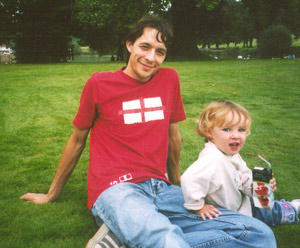

Duncan's Page
Updated 03/10/2002
|  | Duncan spends his days at work, with the
remainder of his time dedicated towards the entertainment of his family.
Below he is interviewed by Heidi: |
What is your favourite mode of transport?
Walking, where there are no cars.
What's your favourite song at the moment?
Lonely Girls, by Suede.
What are your thoughts on Christmas this year?
I miss London. I liked the Natural History Museum in December, because it used to be empty in the week before Christmas.
What are you looking forward to?
The successful completion of plans.
What modern book would you most like (money no object)?
A lavish book on Norwegian art from 1750 to 1950, if there is one.
What are your views on my dress sense?
Everything, apart from the blue top with the lightning flash on it, is fine.
What are you dreading?
The collapse of Western Civilization. But I think it won't.
Where would you like to go on holiday?
Norway and Finland.
How often do you have sex?
Whenever I let my guard down.
What object would you hate to loose?
Umm, after all the obvious ones, maybe the diary I wrote from Jan 1995 to March 1996.
Back to the main page.